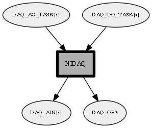

Detailed description:
NationalInstruments DAQ module.The config file must be include a configuration block as expected by mrpt::hwdrivers::CNationalInstrumentsDAQ (similar to rawlog-grabber)Analog inputs are gathered synchronously and published as binary observations and also (decimated) as individual MOOS double variables.Analog and digital asynchronous outputs are supported via individual MOOS double variables.
Module graph:

TODO list:
(None)
Changes log:
(None)
Page generated by Mooxygen 1.1.0 at Thu Jan 22 11:30:21 2015